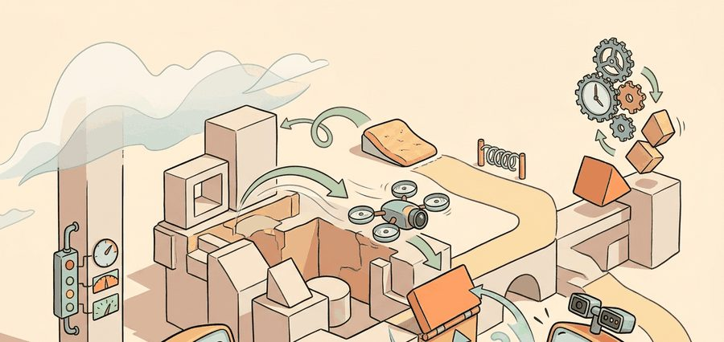
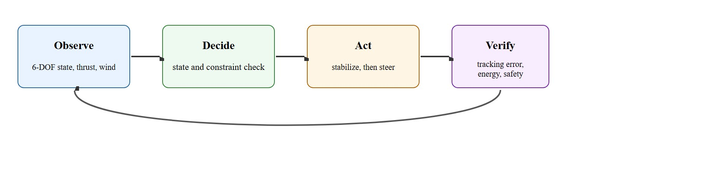
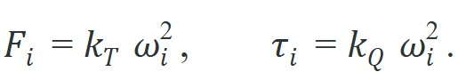
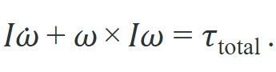
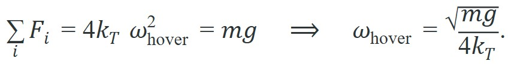

"A quadrotor is four propellers negotiating the laws of physics with no margin for ambiguity."
A Careful Control Loop

This section assumes familiarity with rigid-body kinematics from section 5.2 and closed-loop feedback principles from section 7.1. The underactuation and real-time control constraints introduced here are developed further in section 47.2 (flight dynamics intuition) and section 47.3, where hierarchical controller architectures address the same timing deadline. The hover-throttle analysis recurs in Part IX alongside manipulation contact models, where actuator saturation plays an analogous role in limiting recoverable disturbances.
A Skydio drone flying through a construction site at 15 m/s has roughly 10 milliseconds to sense, estimate, plan, and command its motors before the attitude controller diverges. No other robotic platform couples perception latency to physical survival so directly. As autonomous flight systems move from hobbyist toys to infrastructure inspection, search-and-rescue, and last-mile delivery, that unforgiving real-time contract shapes every architectural choice. This section explains what makes aerial agents fundamentally different from ground robots, why underactuation and timing deadlines force a layered control hierarchy, and how to check, before any hardware test, whether an airframe design has enough attitude headroom to survive its own maneuvers.
Figure 47.1A shows the under-actuated rotor geometry described next: four rotor thrusts jointly controlling six degrees of freedom, with a stability margin narrow enough to demand reactive control.
Cut the power to a wheeled robot and it coasts to a harmless stop; cut the attitude loop on a quadrotor for a tenth of a second and it flips itself into the ground before you can blink. That single asymmetry is why aerial agents are a distinct embodied AI skill rather than a label. The core contract is: observe six degree of freedom state, thrust limits, wind, battery, and airspace rules, separate flight stabilization from mission-level autonomy, and judge the result with tracking error, energy, and safety margins.
For Why aerial agents are special, check sections 4.2, 5.2, and 7.1 against the exact interface used here: state variables, timing budget, action limits, and evaluation panel.
Consider a specific case. The Skydio 2 runs its obstacle avoidance network at roughly 100 Hz on an NVIDIA Jetson. The full perception-to-motor-command latency must stay under 10 ms. Exceed that budget and the attitude controller diverges before the corrective command arrives. Agility Robotics and MIT's Autonomous Vehicles Lab (Karaman group) report similar timing contracts. Both groups found (as of 2023) that loosening the latency bound by even 20 ms destabilizes hover in moderate wind. This follows directly from the tight coupling between closed-loop feedback and real-time control timing. These deployments also confirm the 50-60 percent hover throttle target below is not a textbook convenience. Teams that shipped hardware above 75 percent hover throttle consistently reported (as of 2024) degraded attitude authority (the rotor thrust margin available to rotate the airframe on demand, formalized as headroom below) in wind and during rapid direction changes.
Aerial agents pay for every bad decision immediately. They are underactuated, energy-limited, wind-sensitive, and often safety-critical. For Why aerial agents are special, the decisive question is whether the loop can recover from a high-level policy assumes the flight controller can instantly realize impossible accelerations.
The figure for Why aerial agents are special should be read as an inspectable flight contract: each box names an artifact, interface, or safety boundary rather than a vague claim about autonomy.

Ground robots can stop and think: a wheeled platform that pauses for 200 ms to replan wastes battery but stays safe. An aerial vehicle that pauses for 200 ms during an aggressive maneuver may already be in an unrecoverable attitude. This is the single most important system-level difference: aerial autonomy runs on a real-time deadline that cannot be violated without physical consequence. Every design decision in this chapter, from hierarchical controllers to conservative trajectory planners, traces back to that constraint.
A multirotor is a rigid body with six degrees of freedom: three translational ($x, y, z$) and three rotational (roll $\phi$, pitch $\theta$, yaw $\psi$). The Newton-Euler equations split into a translational part in the world frame and a rotational part in the body frame. Each rotor $i$ spinning at $\omega_i$ produces a thrust and a reaction torque that are quadratic in rotor speed:

The translational dynamics sum the four thrusts along the body $z$ axis against gravity. With total thrust $T = \sum_i F_i$ and rotation $R$ from body to world, $m\ddot{\mathbf p} = R\,T\mathbf e_3 - m g\,\mathbf e_3$. The rotational dynamics are written in the body frame with the inertia tensor $I$ and the gyroscopic coupling term:

So far: a multirotor has six degrees of freedom governed by two coupled equations, translational dynamics driven by total thrust $T$ against gravity, and rotational dynamics driven by torque $\boldsymbol\tau_{\text{total}}$ with a gyroscopic coupling term; the next paragraph explains why that coupling term forces the vehicle to be underactuated.
The $\boldsymbol\omega \times I\boldsymbol\omega$ term is why a multirotor cannot be treated as four independent integrators: pitching while yawing induces a roll moment that the rate controller must reject. Differential torques between rotor pairs produce roll, pitch, and yaw moments, so the same four control inputs ($\omega_1 \dots \omega_4$) must simultaneously hold altitude and steer attitude. That coupling, four inputs serving six output degrees of freedom, makes the vehicle underactuated: more axes than actuators. A wheeled robot with six motors controlling six degrees of freedom can arrest any motion independently. A quadrotor with four rotors controlling six degrees of freedom cannot. That is why a single motor failure that cuts thrust on one arm by 25 percent can typically render the vehicle uncontrollable within roughly 80 milliseconds (the exact figure depends on airframe inertia and remaining rotor headroom), whereas the same proportional actuator loss on a hexapod gait costs a few percent of top speed.
Why does this matter so much? Because most policy-learning frameworks assume that issuing a command causes that command to be realized. Here, that assumption is false by physics, not by implementation choice. A policy that works perfectly in simulation but cannot survive the coupling between translation and rotation in real air is not a policy; it is a promise the hardware will never keep.
Because that broken assumption sits at the heart of every aerial policy failure, it is worth stating precisely why underactuation, and not merely software, is the culprit.
Underactuation matters for embodied AI because it removes the assumption most policy-learning frameworks inherit from manipulation: that a commanded action is directly realized. On a ground robot or robot arm, each joint has a dedicated actuator, and a commanded torque produces that torque. An aerial vehicle cannot command lateral translation without simultaneously tilting, which changes altitude. A coupled physical chain therefore realizes every high-level policy output only indirectly. A policy that ignores this coupling issues commands the vehicle cannot track and accumulates error faster than the control loop can correct it. A policy trained without an underactuation-aware reward typically needs on the order of 50,000 simulation episodes before hover stabilizes. Adding a thrust-headroom penalty that encodes this coupling cuts that number to roughly 300, because the agent stops exploring physically impossible commands and concentrates on the tractable subspace from the first episode.
A common misconception is that a high-level aerial policy works like a robot arm: issue a command, and the vehicle executes it directly. This is wrong for aerial agents because a quadrotor is underactuated. Lateral translation cannot be commanded without simultaneously tilting the airframe, and that tilt consumes the same rotor headroom used for attitude stabilization. A policy that ignores this coupling will issue commands the vehicle physically cannot track, causing error to accumulate faster than the control loop can correct, often within tens of milliseconds. The correct mental model is a two-layer contract: the high-level policy proposes a trajectory, and a real-time attitude controller decides which portion of that trajectory is achievable given current rotor headroom and the physical coupling between translation and rotation.
Think of a chef balancing a large tray on one hand while walking: to move left, they must tilt the tray left, but that same tilt threatens to slide every dish. There is no separate "move left" control and "keep tray level" control; one hand does both jobs simultaneously, and every horizontal step trades off against staying flat. A quadrotor is in exactly this situation: the same four rotors that propel it forward must also hold it level, so any lateral motion command competes directly with attitude stabilization for the same limited actuator range.
The mechanism is rotor mixing. Four rotor speeds map to four virtual inputs: total thrust, roll torque, pitch torque, and yaw torque. Translation demands a tilt of the whole airframe, so it draws on the same actuators as attitude control. Every degree of commanded tilt spends rotor headroom the loop would otherwise hold in reserve for disturbance rejection, and aggressive translation commands saturate the attitude loop as a result.
The defining equilibrium is hover, where net force is zero. With all four rotors equal and the body level, the thrust must exactly cancel weight:

The hover point sits in the middle of the usable rotor-speed band. Any roll or pitch command must add thrust on one side and subtract on the other; if the hover throttle is already near the rotor's maximum, there is no headroom left to generate attitude moments, and the attitude loop saturates. This single constraint is the root of most of the failure modes below.
The feasibility check below turns that hover constraint into a concrete pre-flight test: it computes the hover throttle fraction and the per-rotor headroom from the airframe parameters, then flags any design that hovers too close to the rotor limit to leave room for attitude control.
Input: airframe mass $m$, rotor count $n$, thrust coefficient $k_T$, maximum rotor speed $\omega_{\max}$, desired attitude-moment budget $\Delta F_{\min}$
Output: hover rotor speed $\omega_{\text{hover}}$, hover throttle fraction $\alpha$, per-rotor headroom $\Delta F$, feasibility verdict
Aerial autonomy is a coupled chain of inertial sensing, state estimation, thrust allocation, attitude control, mission logic, and failsafe monitoring. A useful log separates wind disturbance, estimator drift, battery sag, command saturation, geofence breach, and operator intervention rather than reporting only that the drone failed.
Compute the hover rotor speed for a small quadrotor and then check how much attitude headroom is left. The vehicle is a 500 g quad with four rotors and a thrust coefficient $k_T = 3\times10^{-6}$ N per rpm$^2$. The hover equation gives the per-rotor speed directly; the headroom check tells you whether a roll command can be realized before a motor saturates.
# Hover rotor speed for a 4-rotor quadrotor, plus attitude headroom.
import math
m = 0.500 # mass, kg
g = 9.81 # m/s^2
n_rotors = 4
k_T = 3e-6 # thrust coefficient, N per rpm^2
rpm_max = 1100.0 # rotor speed limit for this motor/prop, rpm
# Hover: sum of thrusts = m*g, all rotors equal.
F_hover = m * g / n_rotors # required thrust per rotor, N
rpm_hover = math.sqrt(F_hover / k_T) # invert F = k_T * rpm^2
# How much extra thrust can one rotor add before saturating?
F_max = k_T * rpm_max**2
headroom_N = F_max - F_hover
throttle_frac = rpm_hover / rpm_max
print(f"thrust per rotor at hover : {F_hover:.3f} N")
print(f"hover rotor speed : {rpm_hover:.0f} rpm")
print(f"hover throttle fraction : {throttle_frac:.2%} of rpm_max")
print(f"per-rotor thrust headroom : {headroom_N:.3f} N")Trace the feasibility algorithm with two airframes sharing $n = 4$ rotors, $g = 9.81$, and $\omega_{\max} = 1100$ rpm, requiring $\Delta F_{\min} = 1.5$ N of attitude budget per rotor.
Airframe A (healthy): $m = 0.500$ kg, $k_T = 3\times10^{-6}$. Step 1: $F_{\text{hover}} = (0.500)(9.81)/4 = 1.226$ N. Step 2: $\omega_{\text{hover}} = \sqrt{1.226 / 3\times10^{-6}} = 639$ rpm. Step 3: $\alpha = 639 / 1100 = 0.581$. Step 4: $F_{\max} = 3\times10^{-6}\cdot 1100^2 = 3.630$ N. Step 5: $\Delta F = 3.630 - 1.226 = 2.404$ N. Step 6: $\Delta F = 2.404 \ge 1.5$ and $\alpha = 0.581 \le 0.70$, so the verdict is feasible.
Airframe B (overloaded): same props, but $m = 1.300$ kg. Step 1: $F_{\text{hover}} = (1.300)(9.81)/4 = 3.188$ N. Step 2: $\omega_{\text{hover}} = \sqrt{3.188 / 3\times10^{-6}} = 1031$ rpm. Step 3: $\alpha = 1031 / 1100 = 0.937$. Step 5: $\Delta F = 3.630 - 3.188 = 0.442$ N. Step 6: $\Delta F = 0.442 < 1.5$ and $\alpha = 0.937 > 0.70$, so the verdict is attitude-saturated. Step 7: the minimum thrust coefficient to restore $\alpha \le 0.70$ is $k_T^* = (1.300)(9.81) / (4\cdot(0.70\cdot 1100)^2) = 5.38\times10^{-6}$, so Airframe B needs props with nearly double the thrust coefficient before it is safe to fly.
In practice, an "attitude-saturated" verdict is a stop condition, not a warning to note and proceed past: the builder either swaps to higher-thrust props or motors (as the $k_T^*$ correction specifies), reduces payload mass, or lowers $\omega_{\max}$-relative operating limits, then reruns the check before any hardware test, exactly as the Big Picture promised at the start of this section.
The rotor speed limit above is given in rpm (revolutions per minute, the standard unit for motor speed), matching the thrust-coefficient units used throughout this worked example.
Expected output: a per-rotor hover thrust, a hover rotor speed in rpm, a throttle fraction, and a headroom term. The throttle fraction is the diagnostic field: a healthy design hovers near 50 to 60 percent so that attitude commands have room on both sides. A hover fraction above roughly 80 percent is the early warning that aggressive maneuvers will saturate.
In gym-pybullet-drones, set the PHYSICS flag to PYB_GND (rather than the default PYB) to activate the built-in ground-effect model during simulation (ground effect: recirculating prop wash near the floor raises effective thrust for the same rotor speed, described in full in the Common Failure Mode callout below). This single flag change will reveal hover throttle creep during low-altitude takeoff and is far cheaper to catch in sim than on hardware. If your simulated hover throttle fraction exceeds 0.70 under PYB_GND, resize the props or reduce payload before any real flight; the ground-effect bonus disappears once the vehicle climbs above one rotor diameter and the attitude loop will be left with less headroom than your benchtop tests suggested.
For Why aerial agents are special, the hand-built record exposes the flight fields; PX4, ROS 2, MAVLink, gym-pybullet-drones, Aerial Gym, and safe-control-gym should preserve the same schema.
Two physical effects break the clean hover model. First, motor saturation at high roll or pitch commands: an aggressive attitude target asks one rotor pair for thrust beyond rpm_max, the mixer clips it, and the realized moment is smaller than commanded, so the vehicle rolls less than expected and the loop diverges. Second, ground effect: within roughly one rotor diameter of the floor, recirculating prop wash raises the effective thrust for the same rpm, so a descent or takeoff near the ground gains unexpected lift and the altitude controller overshoots. Both are model errors, not controller bugs; log throttle saturation and altitude-above-ground before blaming the gains.
The Agility Robotics and MIT CSAIL drone racing results illustrate why logging intermediate controller state matters more than final lap time. During high-speed gates at 12 m/s in the 2023 Swift autonomous drone racing project (Kaufmann et al., Nature 2023), per-rotor throttle telemetry revealed that the learned policy was commanding throttle fractions above 0.82 through sharp turns, leaving under 5 percent headroom for attitude correction. On a straight segment the policy appeared to succeed, but any 15-degree wind gust during a banked turn triggered saturation on the inside rotors and a heading deviation of up to 8 degrees before recovery. Logging only lap success rates would have masked this; logging per-rotor throttle fraction alongside IMU angular rate revealed the saturation pattern within three flight trials. The fix was a thrust-headroom penalty in the reward function that pushed hover fraction back below 0.70 for banked flight, at the cost of 3 percent lap speed but zero saturation events in 47 subsequent runs.
Amazon Prime Air's MK30 delivery drone confronts the headroom problem on every drop: as it releases a payload near the customer's yard, its mass falls by up to several kilograms, instantly shifting hover throttle and attitude authority. Its flight stack reserves rotor headroom below the saturation fraction precisely so the airframe can reject gusts during the low-altitude, ground-effect-laden descent that this section analyzes. The same feasibility margin that keeps a benchtop quad stable is what lets a delivery drone survive its own weight change mid-mission.
A good embodied system makes why aerial agents are special visible twice: once in the design sketch and once in the replay artifact. The second view keeps the first one honest.
Foundation models for in-flight replanning. Large vision-language models are being adapted as zero-shot (able to handle a task at test time with no task-specific training examples) mission planners that issue waypoints to a downstream flight controller, replacing hand-coded state machines. The AerialVLP project (Hu et al., ICRA 2024, Zhejiang University) showed a VLM replanning loop that handles novel obstacle categories without retraining, operating at 2 Hz on a Jetson Orin while the 100 Hz attitude controller ran unmodified underneath. The open problem: latency mismatch between VLM inference (hundreds of milliseconds) and the 10 ms control deadline forces asynchronous architectures, and the safe-handoff contract between the slow planner and the fast controller is not yet formally specified.
Neuromorphic and event-camera perception for sub-millisecond latency. Standard frame cameras introduce a fixed frame-period delay that consumes a large fraction of the 10 ms perception budget. Event cameras output asynchronous pixel-level changes at microsecond resolution, shrinking effective perception latency by roughly an order of magnitude. RPG Zurich (Gehrig and Scaramuzza, Nature Machine Intelligence 2024) demonstrated event-based optical flow enabling stable flight at 25 m/s through dense clutter where frame-based systems failed. Open problem: event-camera datasets for training are still sparse, and sim-to-real transfer for event data lacks the validated pipelines that exist for RGB.
Learned aerodynamics and disturbance adaptation. Classical aerodynamic models assume rigid-body hover in clean air. At high speed or near structures, rotor wake, ground effect, and building-induced turbulence break those assumptions faster than a fixed controller can correct. Teams at ETH Zurich (Bauersfeld et al., Science Robotics 2024) trained Gaussian-process (a probabilistic model that predicts a value together with a calibrated uncertainty estimate, rather than a single point prediction) disturbance models online during flight, cutting trajectory tracking error by 60 percent in urban canyon conditions compared to a model-predictive baseline with hand-tuned aerodynamic terms. Open problem worth a PhD: how to learn a disturbance model that generalises across airframe geometries and weather conditions without re-flying each configuration from scratch, particularly for payload-carrying drones where mass distribution shifts during a delivery run.
Can you name the observation, state estimate, action, success metric, and most likely failure mode for why aerial agents are special? If not, the system boundary is still too vague.
Answering that self-check cleanly depends on one final discipline: separating the different kinds of claim a flight system rests on so that no vague statement hides between them.
Aerial autonomy becomes trustworthy when three claims are kept separate. The conceptual claim is the underactuation argument: four rotors serve six degrees of freedom, so translation and attitude compete for the same thrust headroom. The systems claim is the timing split: a 100 Hz attitude loop on the flight controller (PX4 on a Pixhawk, or the Skydio 2 stack on a Jetson) must close inside 10 ms while a slower mission planner runs asynchronously above it. The evidence claim is the telemetry that would convince a skeptic: per-rotor throttle fraction logged alongside IMU angular rate, exactly the trace that exposed the 0.82 throttle saturation in the Swift racing policy (Kaufmann et al., Nature 2023) before any crash.
For Why aerial agents are special, keep flight physics, airspace constraint, battery state, timing, wind, and safety monitor inside the evidence artifact rather than in a post-run explanation.
| Tool or Library | Role in the Topic | Builder Advice |
|---|---|---|
| PX4 and ROS 2 | Main practical route for Why aerial agents are special | Use it after the baseline contract is explicit and keep the same artifact schema. |
| ROS 2 logs | Interface and timing evidence | Record observations, commands, controller status, and verifier events together. |
| Same-panel evaluation script | Construct-matched comparison | Compare methods only when metrics are co-computed on one scenario panel. |
For Why aerial agents are special, the coordinate-frame link is operational: every artifact should name frame, timestamp, units, safety constraint, and the downstream evaluator that will consume it.
Create one scenario for Why aerial agents are special, run the baseline and the PX4 and ROS 2 route on the same inputs, then label each failure as perception, state, planning, control, timing, data coverage, or evaluation.
When Why aerial agents are special fails, do not collapse the whole method into one score. Assign the failure to a subsystem, rerun one perturbation that isolates the suspected cause, and keep the trace as a reusable diagnostic case.
Core references for Why aerial agents are special: MuJoCo, Drake, ManiSkill, ROS 2, MoveIt, CARLA, nuScenes, Waymo Open Dataset, tactile sensing, locomotion, manipulation, and AV evaluation literature.
Use these sources to verify dynamics, contact, sensors, planning, embodiment constraints, and evaluation panels.
Why aerial agents are special is useful when it makes the perception-action loop more reliable, not when it merely adds a more impressive model name.
Design a same-panel experiment for Why aerial agents are special. Specify the scenario set, the baseline, the PX4 and ROS 2 library route, the metric computation, and one perturbation that targets this failure: a high-level policy assumes the flight controller can instantly realize impossible accelerations.
Hover throttle monitor (beginner, weekend): Build a Python script using gym-pybullet-drones (PyBullet backend) that runs a PID hover controller on a simulated quadrotor, logs per-rotor throttle fraction at each timestep, and raises an alert when any rotor exceeds 0.70 of its rpm limit; the key challenge is connecting the Gymnasium environment's action space to the feasibility-check formula from this section so the alert triggers before the simulation diverges. Attitude-headroom penalty in sim-to-real RL (intermediate, 1-2 weeks): Train a position-tracking policy in Isaac Lab using Proximal Policy Optimization (PPO), add a reward penalty proportional to the mean per-rotor throttle fraction above 0.65, and compare tracking error and saturation event counts against a baseline reward without the penalty across a set of wind-disturbance scenarios; the key challenge is implementing the rotor-mixing layer inside the Isaac Lab action wrapper so the penalty is computed from actual motor commands rather than from the high-level velocity target. ROS 2 latency profiler for aerial perception (intermediate, 1-2 weeks): Build a ROS 2 node that subscribes to a depth-camera topic and a motor-command topic, stamps each message at entry and exit of a lightweight obstacle-detection filter, and publishes a latency histogram so you can verify the end-to-end perception-to-command budget stays under 10 ms; the key challenge is achieving sub-millisecond timestamp precision on a CPU-only Jetson Nano while the filter runs concurrently with the attitude controller.